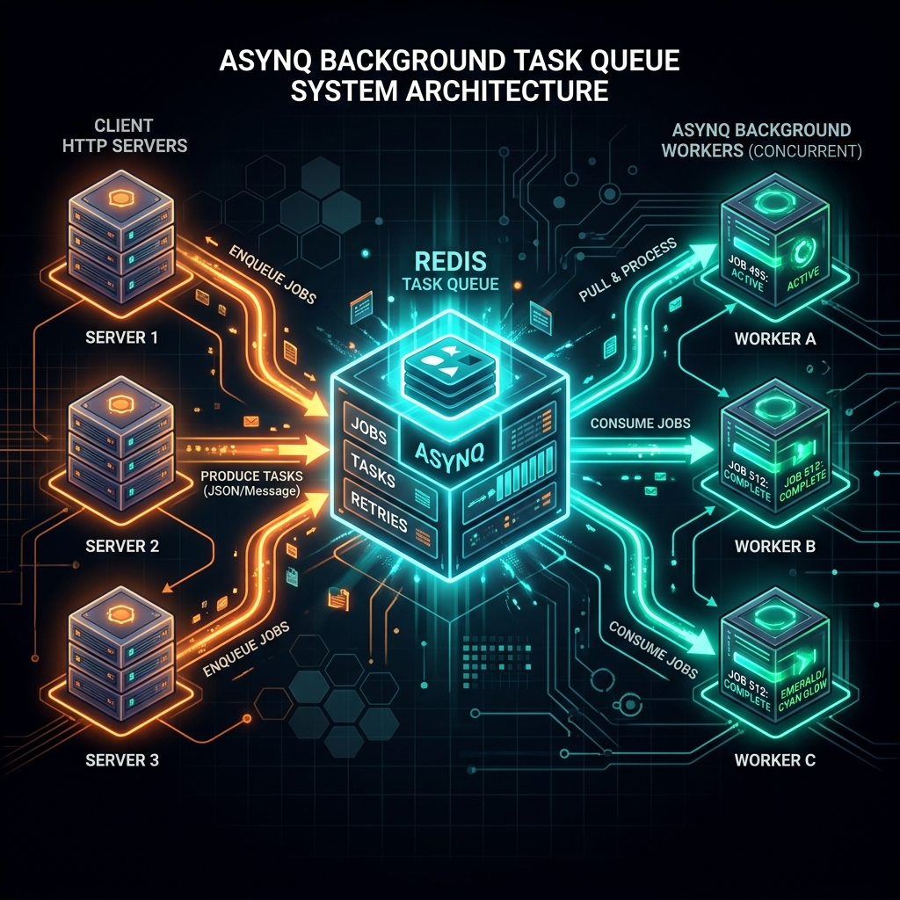
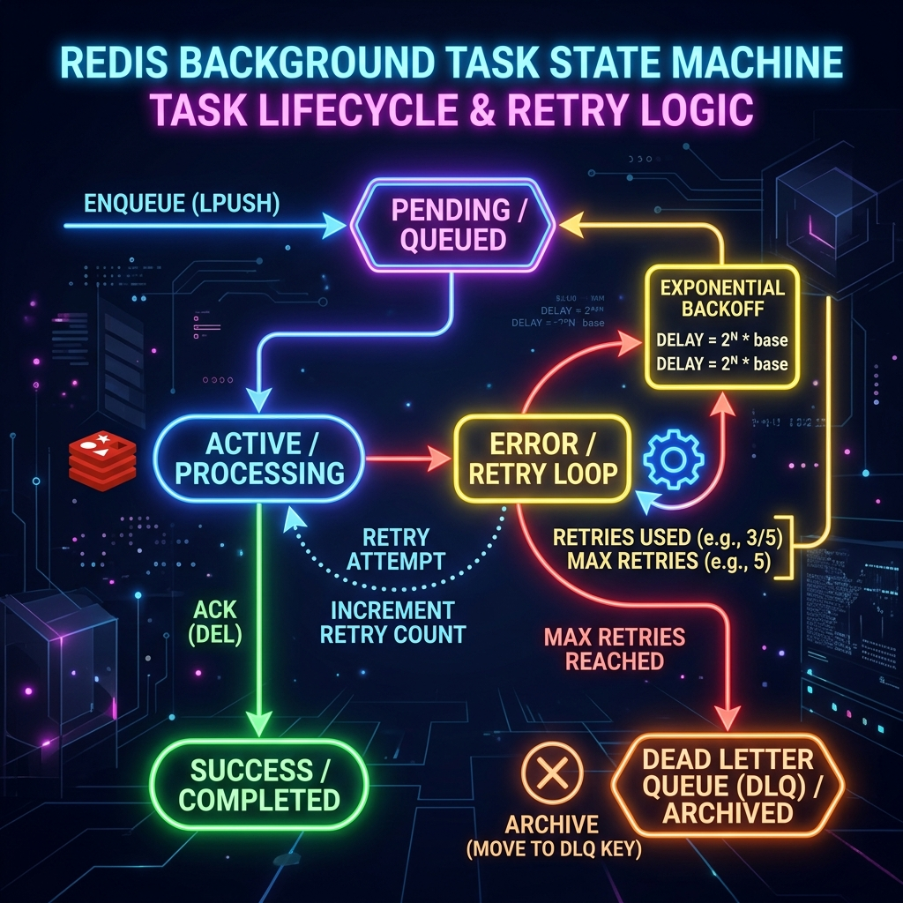

Asynq là thư viện Go mã nguồn mở giúp xử lý background task (tác vụ nền) một cách đơn giản, đáng tin cậy và hiệu quả. Asynq sử dụng Redis làm message broker — mọi task được enqueue vào Redis queue và worker sẽ dequeue để xử lý bất đồng bộ.
Thư viện được xây dựng bởi Ken Hibino, lấy cảm hứng từ Sidekiq (Ruby) và Celery (Python) nhưng được tối ưu cho idioms của Go. Phù hợp cho các tác vụ như: gửi email, xử lý ảnh, xuất báo cáo, đồng bộ dữ liệu, hay bất kỳ tác vụ nào cần chạy ngoài request–response cycle.

Tại sao dùng Asynq?
Có thể xử lý hàng triệu task/ngày. Redis làm backend đảm bảo throughput cực cao và độ trễ thấp. Worker pool tự động co giãn.
Task được persist trong Redis. Nếu worker crash, task sẽ được retry tự động. Hỗ trợ Dead Letter Queue cho task thất bại vĩnh viễn.
Enqueue ngay lập tức, sau X giây/phút, hoặc tại thời điểm cụ thể. Cron-like scheduler tích hợp sẵn.
Asynqmon là dashboard web giúp monitor task, queue, worker realtime. CLI tool để inspect và manage task.
Cài đặt: go get github.com/hibiken/asynq — Yêu cầu Redis 5.0+ và Go 1.19+. Asynq có hơn 10k GitHub stars và được dùng trong production tại nhiều công ty lớn.
So sánh Asynq với các giải pháp khác
| Tiêu chí | Asynq | Machinery | RabbitMQ | Kafka |
|---|---|---|---|---|
| Backend | Redis | Redis/AMQP/SQS | AMQP | Kafka cluster |
| Độ phức tạp | ✅ Đơn giản | Trung bình | Trung bình | ❌ Phức tạp |
| Retry & DLQ | ✅ Tích hợp sẵn | Có | Có | Có |
| Scheduled Tasks | ✅ Sẵn có | Có | Plugin | Không native |
| Dashboard | ✅ Asynqmon | Không | RabbitMQ Mgmt | AKHQ/Kowl |
| Go-idiomatic | ✅ Rất tốt | Khá tốt | Trung bình | Trung bình |
Vòng đời của một Task
Các thành phần cốt lõi
Dùng để enqueue task vào Redis. Thread-safe, có thể dùng nhiều goroutine đồng thời. Thường được inject vào HTTP handler hoặc service layer.
Quản lý worker pool, kéo task từ Redis và dispatch đến handler tương ứng. Xử lý graceful shutdown, heartbeat, và recovery.
Router để đăng ký handler function cho từng loại task. Tương tự http.ServeMux — dùng pattern matching theo task type.
Cơ chế lưu trữ trong Redis
Lưu ý về at-least-once delivery: Asynq đảm bảo task được xử lý ít nhất một lần. Nếu worker crash trong khi xử lý, task sẽ được đưa lại queue sau timeout. Handler phải được thiết kế idempotent (xử lý nhiều lần cho cùng kết quả).
Cài đặt thư viện
# Cài Asynq go get github.com/hibiken/asynq # Khởi động Redis bằng Docker docker run -d -p 6379:6379 --name redis-asynq redis:7-alpine # Cài Asynqmon dashboard (optional) go install github.com/hibiken/asynqmon@latest
Cấu hình RedisClientOpt
package config import "github.com/hibiken/asynq" // RedisOption trả về cấu hình kết nối Redis cho Asynq. func RedisOption() asynq.RedisClientOpt { return asynq.RedisClientOpt{ Addr: "localhost:6379", Password: "", // không cần nếu không set AUTH DB: 0, // Redis DB index PoolSize: 10, // connection pool size } } // RedisFailoverOption — Redis Sentinel cho HA func RedisSentinelOption() asynq.RedisFailoverClientOpt { return asynq.RedisFailoverClientOpt{ MasterName: "mymaster", SentinelAddrs: []string{"sentinel1:26379", "sentinel2:26379"}, } } // RedisClusterOption — Redis Cluster func RedisClusterOption() asynq.RedisClusterClientOpt { return asynq.RedisClusterClientOpt{ Addrs: []string{"node1:6379", "node2:6379", "node3:6379"}, } }
Cấu hình Server nâng cao
package worker import ( "github.com/hibiken/asynq" "time" ) func NewServer(redisOpt asynq.RedisClientOpt) *asynq.Server { return asynq.NewServer(redisOpt, asynq.Config{ // Số worker goroutine đồng thời Concurrency: 20, // Cấu hình queue với priority weights // Worker sẽ pick task theo tỉ lệ 6:3:1 Queues: map[string]int{ "critical": 6, "default": 3, "low": 1, }, // Strict priority: xử lý hết critical trước rồi mới đến default StrictPriority: false, // Thời gian tối đa để xử lý một task ShutdownTimeout: 10 * time.Second, // Logger tuỳ chỉnh Logger: newAsynqLogger(), // Retry delay function — exponential backoff RetryDelayFunc: func(n int, err error, task *asynq.Task) time.Duration { return time.Duration(n*n) * time.Minute }, // IsFailure — quyết định lỗi nào không cần retry IsFailure: func(err error) bool { return err != asynq.SkipRetry }, // ErrorHandler — callback khi task thất bại hết retry ErrorHandler: asynq.ErrorHandlerFunc(func(ctx context.Context, task *asynq.Task, err error) { log.Printf("[FAILED] task=%s queue=%s err=%v", task.Type(), task.ResultWriter(), err) }), }) }
Task Options khi Enqueue
| Option | Mô tả | Ví dụ |
|---|---|---|
asynq.Queue(q) | Chỉ định queue name | asynq.Queue("critical") |
asynq.MaxRetry(n) | Số lần retry tối đa | asynq.MaxRetry(5) |
asynq.Timeout(d) | Deadline xử lý | asynq.Timeout(30*time.Second) |
asynq.Deadline(t) | Absolute deadline | asynq.Deadline(time.Now().Add(1*time.Hour)) |
asynq.ProcessIn(d) | Delay trước khi xử lý | asynq.ProcessIn(5*time.Minute) |
asynq.ProcessAt(t) | Xử lý tại thời điểm cụ thể | asynq.ProcessAt(tomorrow) |
asynq.Unique(ttl) | Deduplication trong TTL | asynq.Unique(1*time.Hour) |
asynq.TaskID(id) | Set custom Task ID | asynq.TaskID("order-123") |
asynq.Retention(d) | Giữ task đã hoàn thành trong bao lâu | asynq.Retention(24*time.Hour) |
Handler Function Signature
// Handler signature — phải implement interface này type Handler interface { ProcessTask(ctx context.Context, t *asynq.Task) error } // Dạng function (đơn giản hơn) type HandlerFunc func(ctx context.Context, t *asynq.Task) error // Ví dụ handler đầy đủ với error handling func HandleEmailTask(ctx context.Context, t *asynq.Task) error { // Decode payload var payload EmailPayload if err := json.Unmarshal(t.Payload(), &payload); err != nil { // Lỗi không retry được — dùng fmt.Errorf + SkipRetry return fmt.Errorf("%w: %v", asynq.SkipRetry, err) } // Check context cancellation select { case <-ctx.Done(): return ctx.Err() default: } // Ghi kết quả vào ResultWriter (có thể query qua CLI/dashboard) if _, err := fmt.Fprintf(t.ResultWriter(), "sent to %s", payload.To); err != nil { log.Printf("warn: write result: %v", err) } return nil }
Best practice: Wrap error với asynq.SkipRetry khi lỗi không thể retry (ví dụ: invalid payload, business logic error). Các lỗi tạm thời (network timeout, DB unavailable) nên return bình thường để Asynq tự retry.
Bước 1 — Định nghĩa Task
package tasks import ( "encoding/json" "fmt" "github.com/hibiken/asynq" ) // TypeEmailWelcome — hằng số định nghĩa loại task. // Convention: "domain:action" const ( TypeEmailWelcome = "email:welcome" TypeEmailReport = "email:report" TypeImageResize = "image:resize" ) // EmailWelcomePayload — dữ liệu đi kèm task. // Chỉ lưu primitive data, không lưu pointer. type EmailWelcomePayload struct { UserID int64 `json:"user_id"` Email string `json:"email"` Username string `json:"username"` } // NewEmailWelcomeTask tạo asynq.Task sẵn sàng enqueue. func NewEmailWelcomeTask(userID int64, email, username string) (*asynq.Task, error) { payload, err := json.Marshal(EmailWelcomePayload{ UserID: userID, Email: email, Username: username, }) if err != nil { return nil, fmt.Errorf("marshal payload: %w", err) } // asynq.NewTask(type, payload, ...options) return asynq.NewTask(TypeEmailWelcome, payload, asynq.MaxRetry(3), asynq.Queue("default"), asynq.Timeout(30*time.Second), ), nil }
Bước 2 — Handler xử lý Task
package tasks import ( "context" "encoding/json" "fmt" "log/slog" "github.com/hibiken/asynq" ) // EmailHandler chứa dependency cần thiết để xử lý task. type EmailHandler struct { mailer Mailer // interface, dễ mock trong test db DB } func NewEmailHandler(mailer Mailer, db DB) *EmailHandler { return &EmailHandler{mailer: mailer, db: db} } // ProcessTask — implement asynq.Handler interface. func (h *EmailHandler) ProcessTask(ctx context.Context, t *asynq.Task) error { var p EmailWelcomePayload if err := json.Unmarshal(t.Payload(), &p); err != nil { // Bad payload → skip retry, gửi ngay vào archived return fmt.Errorf("%w: invalid payload: %v", asynq.SkipRetry, err) } slog.InfoContext(ctx, "processing email task", "task_id", asynq.GetTaskID(ctx), "user_id", p.UserID, ) // Gửi email if err := h.mailer.SendWelcome(ctx, p.Email, p.Username); err != nil { // Lỗi tạm thời → return error để Asynq retry return fmt.Errorf("send welcome email to %s: %w", p.Email, err) } // Cập nhật DB if err := h.db.MarkWelcomeSent(ctx, p.UserID); err != nil { return fmt.Errorf("mark welcome sent: %w", err) } return nil }
Bước 3 — Client Enqueue
package api import ( "net/http" "github.com/hibiken/asynq" "myapp/tasks" ) type UserHandler struct { client *asynq.Client db DB } func (h *UserHandler) Register(w http.ResponseWriter, r *http.Request) { // 1. Tạo user trong DB user, err := h.db.CreateUser(r.Context(), ...) if err != nil { http.Error(w, err.Error(), http.StatusInternalServerError) return } // 2. Tạo background task — không block HTTP response task, err := tasks.NewEmailWelcomeTask(user.ID, user.Email, user.Username) if err != nil { log.Printf("warn: create email task: %v", err) // Không fail request vì task là background — tuỳ business logic } else { info, err := h.client.EnqueueContext(r.Context(), task) if err != nil { log.Printf("warn: enqueue email task: %v", err) } else { log.Printf("enqueued task id=%s queue=%s", info.ID, info.Queue) } } // 3. Trả về response ngay lập tức — không chờ email gửi xong respondJSON(w, http.StatusCreated, user) } // Đóng client khi shutdown func (h *UserHandler) Close() { h.client.Close() }
Bước 4 — Khởi động Worker Server
package main import ( "log" "os" "os/signal" "syscall" "github.com/hibiken/asynq" "myapp/config" "myapp/tasks" ) func main() { redisOpt := config.RedisOption() // Khởi tạo Server srv := asynq.NewServer(redisOpt, asynq.Config{ Concurrency: 20, Queues: map[string]int{ "critical": 6, "default": 3, "low": 1, }, }) // Khởi tạo dependencies mailer := newMailer() db := newDB() // Đăng ký handlers vào ServeMux mux := asynq.NewServeMux() emailHandler := tasks.NewEmailHandler(mailer, db) mux.Handle(tasks.TypeEmailWelcome, emailHandler) mux.HandleFunc(tasks.TypeImageResize, tasks.HandleImageResize) // Graceful shutdown quit := make(chan os.Signal, 1) signal.Notify(quit, syscall.SIGTERM, syscall.SIGINT) go func() { <-quit log.Println("Shutting down worker...") srv.Shutdown() }() log.Println("Worker started. Waiting for tasks...") if err := srv.Run(mux); err != nil { log.Fatalf("worker run: %v", err) } }
Asynq hỗ trợ 3 phương thức lên lịch: ProcessIn (delay từ bây giờ), ProcessAt (thời điểm cụ thể), và Scheduler (cron-like tự động lặp). Task scheduled được lưu trong Redis Sorted Set với score là Unix timestamp.
package tasks import ( "time" "github.com/hibiken/asynq" ) // EnqueueWithDelay — enqueue task sẽ xử lý sau 5 phút func EnqueueWithDelay(client *asynq.Client, userID int64) { task, _ := NewEmailWelcomeTask(userID, "user@example.com", "Alice") info, err := client.Enqueue(task, asynq.ProcessIn(5*time.Minute), // delay 5 phút ) if err != nil { log.Printf("enqueue failed: %v", err) return } log.Printf("scheduled task id=%s, will process at %v", info.ID, time.Now().Add(5*time.Minute)) } // EnqueueAtSpecificTime — gửi báo cáo cuối ngày lúc 23:59 func EnqueueDailyReport(client *asynq.Client) { now := time.Now() endOfDay := time.Date(now.Year(), now.Month(), now.Day(), 23, 59, 0, 0, now.Location()) task := asynq.NewTask("report:daily", nil) client.Enqueue(task, asynq.ProcessAt(endOfDay)) } // UniqueTask — dedup trong 1 giờ: nếu task cùng loại đã được enqueue // và chưa xử lý, task mới sẽ bị reject. func EnqueueUniqueTask(client *asynq.Client, orderID string) error { task := asynq.NewTask("order:notify", []byte(orderID)) _, err := client.Enqueue(task, asynq.TaskID(orderID), // custom ID cho dedup asynq.Unique(1*time.Hour), // không enqueue duplicate trong 1h ) if err == asynq.ErrTaskIDConflict { log.Printf("task %s already queued, skipping", orderID) return nil } return err }
Periodic Task với Scheduler (Cron)
package main import ( "log" "github.com/hibiken/asynq" "myapp/config" ) func main() { // Scheduler dùng cron expression giống Unix crontab scheduler := asynq.NewScheduler( config.RedisOption(), &asynq.SchedulerOpts{ Location: time.Local(), // timezone EnqueueErrorHandler: func(task *asynq.Task, opts []asynq.Option, err error) { log.Printf("scheduler enqueue error task=%s: %v", task.Type(), err) }, }, ) // Đăng ký task chạy hàng giờ entryID, err := scheduler.Register("@every 1h", asynq.NewTask("stats:aggregate", nil), asynq.Queue("low"), ) if err != nil { log.Fatal(err) } log.Printf("registered periodic task id=%s", entryID) // Mỗi ngày lúc 02:00 sáng scheduler.Register("0 2 * * *", asynq.NewTask("db:cleanup", nil), asynq.Queue("low"), asynq.Timeout(30*time.Minute), ) // Mỗi phút — dùng @every syntax scheduler.Register("@every 1m", asynq.NewTask("health:check", nil), ) // Chạy scheduler (blocking) if err := scheduler.Run(); err != nil { log.Fatalf("scheduler run: %v", err) } }
Cron Syntax: Asynq hỗ trợ standard Unix cron "min hour day month weekday" và các shorthand như @hourly, @daily, @weekly, @monthly, @every Nd. Scheduler cần chạy như một process riêng biệt (hoặc goroutine) — không phải trong worker process.
package main // Enqueue vào queue critical — xử lý với priority cao nhất func enqueuePaymentTask(client *asynq.Client, paymentID string) { task := asynq.NewTask("payment:process", []byte(paymentID)) client.Enqueue(task, asynq.Queue("critical"), // ← queue priority cao asynq.MaxRetry(0), // payment không retry asynq.Timeout(10*time.Second), ) } // Enqueue vào queue low — batch processing không quan trọng deadline func enqueueAnalyticsTask(client *asynq.Client, eventData []byte) { task := asynq.NewTask("analytics:track", eventData) client.Enqueue(task, asynq.Queue("low"), asynq.MaxRetry(5), ) } // Server với Strict Priority — payment luôn được xử lý trước var strictServer = asynq.NewServer(redisOpt, asynq.Config{ Concurrency: 10, Queues: map[string]int{ "critical": 3, "default": 2, "low": 1, }, StrictPriority: true, // ← strict mode })

package tasks import ( "context" "errors" "fmt" "time" "github.com/hibiken/asynq" ) // RetryableError — lỗi nên được retry type RetryableError struct{ msg string } func (e *RetryableError) Error() string { return e.msg } // HandlerWithRetryLogic — xử lý task với retry thông minh func HandlerWithRetryLogic(ctx context.Context, t *asynq.Task) error { retryCount, _ := asynq.GetRetryCount(ctx) // số lần retry hiện tại maxRetry, _ := asynq.GetMaxRetry(ctx) // max retry đã set log.Printf("attempt %d/%d for task %s", retryCount+1, maxRetry+1, t.Type()) err := doWork(ctx, t) if err == nil { return nil } // Phân loại lỗi: var retryable *RetryableError switch { case errors.As(err, &retryable): // Lỗi tạm thời — Asynq sẽ retry sau delay return err case retryCount >= maxRetry-1: // Lần retry cuối — alert & skip sendAlert("task exhausted retries", t, err) return fmt.Errorf("%w: %v", asynq.SkipRetry, err) default: // Lỗi không xác định — retry return err } } // ExponentialBackoffRetry — custom retry delay function func ExponentialBackoffRetry(n int, err error, t *asynq.Task) time.Duration { // 2^n * 10s: 10s, 20s, 40s, 80s, 160s... delay := time.Duration(1<<uint(n)) * 10 * time.Second if delay > 24*time.Hour { delay = 24 * time.Hour // cap at 24h } jitter := time.Duration(rand.Int63n(int64(time.Second) * 30)) return delay + jitter // thêm jitter tránh thundering herd } // Inspector — quản lý Dead Letter Queue thủ công func ProcessArchivedTasks(redisOpt asynq.RedisClientOpt) { inspector := asynq.NewInspector(redisOpt) defer inspector.Close() // Liệt kê archived tasks trong queue "default" tasks, err := inspector.ListArchivedTasks("default", asynq.Page(1), asynq.PageSize(20)) if err != nil { log.Printf("list archived: %v", err) return } for _, task := range tasks { log.Printf("archived task: id=%s type=%s err=%s", task.ID, task.Type, task.LastErr) // Enqueue lại task đã archived if err := inspector.RunArchivedTask("default", task.ID); err != nil { log.Printf("re-run task %s: %v", task.ID, err) } } }
package middleware import ( "context" "log/slog" "runtime/debug" "time" "github.com/hibiken/asynq" "go.opentelemetry.io/otel" "go.opentelemetry.io/otel/attribute" ) // Logging — ghi log mỗi task với duration func Logging(next asynq.Handler) asynq.Handler { return asynq.HandlerFunc(func(ctx context.Context, t *asynq.Task) error { start := time.Now() taskID, _ := asynq.GetTaskID(ctx) slog.InfoContext(ctx, "task started", "task_id", taskID, "task_type", t.Type(), ) err := next.ProcessTask(ctx, t) dur := time.Since(start) if err != nil { slog.ErrorContext(ctx, "task failed", "task_id", taskID, "duration", dur, "error", err, ) } else { slog.InfoContext(ctx, "task completed", "task_id", taskID, "duration", dur, ) } return err }) } // PanicRecovery — recover từ panic trong handler func PanicRecovery(next asynq.Handler) asynq.Handler { return asynq.HandlerFunc(func(ctx context.Context, t *asynq.Task) (err error) { defer func() { if r := recover(); r != nil { stack := debug.Stack() err = fmt.Errorf("%w: panic: %v\n%s", asynq.SkipRetry, r, stack) slog.Error("panic in task handler", "task", t.Type(), "panic", r) } }() return next.ProcessTask(ctx, t) }) } // OpenTelemetry Tracing middleware func Tracing(next asynq.Handler) asynq.Handler { tracer := otel.Tracer("asynq-worker") return asynq.HandlerFunc(func(ctx context.Context, t *asynq.Task) error { ctx, span := tracer.Start(ctx, "task."+t.Type()) defer span.End() taskID, _ := asynq.GetTaskID(ctx) span.SetAttributes( attribute.String("task.id", taskID), attribute.String("task.type", t.Type()), ) err := next.ProcessTask(ctx, t) if err != nil { span.RecordError(err) } return err }) } // Chain — kết hợp nhiều middleware // Sử dụng: mux.Use(Chain(Logging, PanicRecovery, Tracing)) func Chain(middlewares ...func(asynq.Handler) asynq.Handler) func(asynq.Handler) asynq.Handler { return func(final asynq.Handler) asynq.Handler { for i := len(middlewares) - 1; i >= 0; i-- { final = middlewares[i](final) } return final } } // Đăng ký middleware vào mux func SetupMux(handlers ...) *asynq.ServeMux { mux := asynq.NewServeMux() mux.Use(Logging) // áp dụng cho tất cả handler mux.Use(PanicRecovery) mux.Use(Tracing) return mux }
package batch import ( "context" "encoding/json" "sync" "github.com/hibiken/asynq" ) // BulkEnqueue — enqueue nhiều task cùng lúc hiệu quả func BulkEnqueue(client *asynq.Client, items []OrderItem) error { var ( mu sync.Mutex errs []error wg sync.WaitGroup ) // Concurrency limiter — enqueue tối đa 50 task song song sem := make(chan struct{}, 50) for _, item := range items { item := item // capture loop var sem <- struct{}{} wg.Add(1) go func() { defer wg.Done() defer func() { <-sem }() payload, err := json.Marshal(item) if err != nil { mu.Lock() errs = append(errs, err) mu.Unlock() return } task := asynq.NewTask("order:process", payload, asynq.Queue("default"), asynq.MaxRetry(3), ) if _, err := client.Enqueue(task); err != nil { mu.Lock() errs = append(errs, err) mu.Unlock() } }() } wg.Wait() if len(errs) > 0 { return fmt.Errorf("%d enqueue errors, first: %w", len(errs), errs[0]) } return nil } // ChunkedBatch — chia nhỏ slice và enqueue theo chunks // Hữu ích khi batch cực lớn (>100k items) func ChunkedBatch[T any]( ctx context.Context, client *asynq.Client, items []T, chunkSize int, taskType string, opts ...asynq.Option, ) error { for i := 0; i < len(items); i += chunkSize { end := i + chunkSize if end > len(items) { end = len(items) } chunk := items[i:end] payload, err := json.Marshal(map[string]any{ "items": chunk, "batch_start": i, }) if err != nil { return err } task := asynq.NewTask(taskType, payload, opts...) if _, err := client.EnqueueContext(ctx, task); err != nil { return err } } return nil }
Asynqmon là web dashboard cho phép bạn xem queue metrics, inspect task, retry archived task, và xoá task trực tiếp từ browser. Đây là công cụ không thể thiếu trong production.
package main import ( "log" "net/http" "github.com/hibiken/asynq" "github.com/hibiken/asynqmon" ) func main() { redisOpt := asynq.RedisClientOpt{Addr: "localhost:6379"} // Tạo Asynqmon handler h := asynqmon.New(asynqmon.Options{ RootPath: "/monitoring", // URL prefix RedisConnOpt: redisOpt, PrometheusAddress: "http://prometheus:9090", // optional metrics }) defer h.Close() // Mount vào HTTP server hiện tại http.Handle("/monitoring/", h) log.Println("Asynqmon running at http://localhost:8080/monitoring") log.Fatal(http.ListenAndServe(":8080", nil)) } // Hoặc dùng CLI để inspect // asynq dash -- TUI dashboard // asynq stats -- queue statistics // asynq queue inspect --queue=default -- inspect tasks in queue // asynq task run --queue=default --id=<id> -- manually run archived task
Inspector API — Quản lý task bằng code
func InspectorExamples(redisOpt asynq.RedisClientOpt) { inspector := asynq.NewInspector(redisOpt) defer inspector.Close() // Lấy thông tin tất cả queues queues, _ := inspector.Queues() for _, q := range queues { fmt.Printf("queue=%s size=%d latency=%s\n", q.Queue, q.Size, q.Latency) } // Xoá tất cả pending tasks trong queue "low" n, _ := inspector.DeleteAllPendingTasks("low") fmt.Printf("deleted %d tasks\n", n) // Pause và resume queue inspector.PauseQueue("default") // tạm dừng nhận task mới inspector.UnpauseQueue("default") // tiếp tục // Lấy task theo ID task, _ := inspector.GetTaskInfo("default", "task-id-123") fmt.Printf("task state=%s retried=%d/%d\n", task.State, task.Retried, task.MaxRetry) // Re-run archived (dead letter) task inspector.RunArchivedTask("default", "task-id-123") // Delete task cụ thể inspector.DeleteTask("default", "task-id-456") }
package task // Task types — tập trung tất cả constants ở đây const ( TypeSendEmail = "email:send" TypeGenerateReport = "report:generate" TypeProcessPayment = "payment:process" TypeSendNotification = "notification:send" TypeCleanupExpired = "cleanup:expired" ) type SendEmailPayload struct { To string `json:"to"` Subject string `json:"subject"` Body string `json:"body"` UserID uint `json:"user_id"` } type GenerateReportPayload struct { ReportID uint `json:"report_id"` Format string `json:"format"` // "pdf" | "excel" StartDate string `json:"start_date"` EndDate string `json:"end_date"` }
package handler import ( "encoding/json" "net/http" "github.com/gin-gonic/gin" "github.com/hibiken/asynq" "myapp/internal/task" "myapp/internal/model" ) type ReportHandler struct { db *gorm.DB taskClient *asynq.Client } func NewReportHandler(db *gorm.DB, client *asynq.Client) *ReportHandler { return &ReportHandler{db: db, taskClient: client} } // POST /api/v1/reports — tạo report request, enqueue background task func (h *ReportHandler) CreateReport(c *gin.Context) { var req struct { Format string `json:"format" binding:"required,oneof=pdf excel"` StartDate string `json:"start_date" binding:"required"` EndDate string `json:"end_date" binding:"required"` } if err := c.ShouldBindJSON(&req); err != nil { c.JSON(http.StatusBadRequest, gin.H{"error": err.Error()}) return } // 1. Tạo report record với status "pending" report := model.Report{ UserID: c.MustGet("userID").(uint), Status: "pending", Format: req.Format, StartDate: req.StartDate, EndDate: req.EndDate, } if err := h.db.WithContext(c.Request.Context()).Create(&report).Error; err != nil { c.JSON(http.StatusInternalServerError, gin.H{"error": "db error"}) return } // 2. Enqueue background task payload, _ := json.Marshal(task.GenerateReportPayload{ ReportID: report.ID, Format: req.Format, StartDate: req.StartDate, EndDate: req.EndDate, }) t := asynq.NewTask(task.TypeGenerateReport, payload, asynq.Queue("default"), asynq.MaxRetry(2), asynq.TaskID(fmt.Sprintf("report-%d", report.ID)), asynq.Timeout(5*time.Minute), ) info, err := h.taskClient.EnqueueContext(c.Request.Context(), t) if err != nil { // Rollback report status nếu enqueue thất bại h.db.Model(&report).Update("status", "failed") c.JSON(http.StatusInternalServerError, gin.H{"error": "enqueue failed"}) return } // 3. Trả về ngay — không chờ report generate xong c.JSON(http.StatusAccepted, gin.H{ "report_id": report.ID, "task_id": info.ID, "status": "processing", "message": "Report is being generated. Poll /api/v1/reports/:id for status.", }) } // GET /api/v1/reports/:id — polling status func (h *ReportHandler) GetReport(c *gin.Context) { id := c.Param("id") var report model.Report if err := h.db.First(&report, id).Error; err != nil { c.JSON(http.StatusNotFound, gin.H{"error": "not found"}) return } c.JSON(http.StatusOK, report) }
package task import ( "context" "encoding/json" "fmt" "gorm.io/gorm" "github.com/hibiken/asynq" "myapp/internal/model" ) type ReportTaskHandler struct { db *gorm.DB generator ReportGenerator storage FileStorage } func (h *ReportTaskHandler) ProcessTask(ctx context.Context, t *asynq.Task) error { var p GenerateReportPayload if err := json.Unmarshal(t.Payload(), &p); err != nil { return fmt.Errorf("%w: %v", asynq.SkipRetry, err) } // Cập nhật status → "processing" h.db.WithContext(ctx).Model(&model.Report{}).Where("id = ?", p.ReportID).Update("status", "processing") // Generate report (có thể lâu — context timeout giải quyết) data, err := h.generator.Generate(ctx, p.Format, p.StartDate, p.EndDate) if err != nil { h.db.Model(&model.Report{}).Where("id = ?", p.ReportID).Update("status", "failed") return fmt.Errorf("generate report: %w", err) } // Upload lên S3/GCS url, err := h.storage.Upload(ctx, fmt.Sprintf("reports/%d.%s", p.ReportID, p.Format), data) if err != nil { return fmt.Errorf("upload report: %w", err) } // Cập nhật status → "completed" + URL return h.db.WithContext(ctx).Model(&model.Report{}).Where("id = ?", p.ReportID).Updates(map[string]any{ "status": "completed", "url": url, }).Error }
## Kubernetes deployment cho Asynq Worker apiVersion: apps/v1 kind: Deployment metadata: name: asynq-worker labels: app: asynq-worker spec: replicas: 3 # bắt đầu với 3 replicas selector: matchLabels: app: asynq-worker template: metadata: labels: app: asynq-worker spec: containers: - name: worker image: myapp/worker:latest env: - name: REDIS_ADDR valueFrom: secretKeyRef: name: redis-secret key: addr - name: WORKER_CONCURRENCY value: "20" resources: requests: memory: "256Mi" cpu: "250m" limits: memory: "512Mi" cpu: "500m" # Graceful shutdown — cho worker hoàn thành task hiện tại lifecycle: preStop: exec: command: ["/bin/sh", "-c", "sleep 30"] terminationGracePeriodSeconds: 60 --- ## HPA scale dựa trên custom metric (Redis queue length) apiVersion: autoscaling/v2 kind: HorizontalPodAutoscaler metadata: name: asynq-worker-hpa spec: scaleTargetRef: apiVersion: apps/v1 kind: Deployment name: asynq-worker minReplicas: 2 maxReplicas: 20 metrics: - type: External external: metric: name: redis_queue_length selector: matchLabels: queue: default target: type: AverageValue averageValue: "100" # scale up khi queue > 100 tasks/worker
- 1Lưu object lớn trong payload — payload chỉ nên chứa ID, không chứa toàn bộ document
- 2Non-idempotent handler — gửi email 2 lần khi retry. Phải check "đã gửi chưa" trước
- 3Không đóng asynq.Client — leak goroutine và Redis connection
- 4Panic trong handler mà không có recovery middleware — crash toàn bộ worker
- 5MaxRetry quá cao cho task irreversible (payment) — enqueue task thật nhiều lần có thể nguy hiểm
- 1Payload chỉ chứa ID và tham số nhỏ. Worker tự fetch data từ DB khi xử lý
- 2Handler phải idempotent — check trạng thái trong DB trước khi thực hiện action
- 3Luôn
defer client.Close()và dùngserver.Shutdown()khi nhận SIGTERM - 4Thêm PanicRecovery middleware và dùng
SkipRetrycho lỗi không thể recover - 5Dùng
asynq.Unique(ttl)để dedup task khi cần, đặt TaskID có nghĩa
Checklist Production Readiness
// ✅ 1. Idempotent handler — check trước khi hành động func HandleSendEmail(ctx context.Context, t *asynq.Task) error { var p EmailPayload json.Unmarshal(t.Payload(), &p) // Idempotency check: đã gửi chưa? if emailAlreadySent(ctx, p.UserID, p.Template) { log.Printf("email already sent for user %d, skipping", p.UserID) return nil // no-op, không return error } return sendEmail(ctx, p) } // ✅ 2. Graceful shutdown đúng cách func RunWithGracefulShutdown(srv *asynq.Server, mux *asynq.ServeMux) { quit := make(chan os.Signal, 1) signal.Notify(quit, syscall.SIGINT, syscall.SIGTERM) errCh := make(chan error, 1) go func() { errCh <- srv.Run(mux) }() select { case <-quit: log.Println("signal received, shutting down...") srv.Shutdown() // chờ task hiện tại hoàn thành case err := <-errCh: log.Fatalf("server error: %v", err) } } // ✅ 3. Payload nhỏ — chỉ ID type GoodPayload struct{ OrderID uint } // ✅ chỉ ID type BadPayload struct{ Order model.Order } // ❌ lưu cả struct lớn // ✅ 4. SkipRetry cho lỗi không thể retry var ErrInvalidInput = fmt.Errorf("%w: invalid input", asynq.SkipRetry) // ✅ 5. Metrics với Prometheus var ( taskDuration = prometheus.NewHistogramVec( prometheus.HistogramOpts{Name: "asynq_task_duration_seconds"}, []string{"task_type", "status"}, ) )
Memory leak phổ biến: Tạo asynq.Client mới trong mỗi request thay vì reuse một instance duy nhất. Mỗi Client tạo connection pool riêng → hết Redis connection. Luôn tạo Client một lần và inject vào handler.
🐙 GitHub Repositories chính thức
📚 Ví dụ thực tế
▶️ Video & Blog
🛠️ Package liên quan
Tóm tắt: Asynq là lựa chọn tốt nhất cho background task trong Go ecosystem. Đơn giản hơn Kafka/RabbitMQ nhưng đủ mạnh cho phần lớn use cases. Điểm bắt đầu: đọc Wiki → chạy examples → tích hợp vào project theo pattern Gin+GORM → deploy với Asynqmon để monitor. Luôn nhớ: idempotent handlers + graceful shutdown + monitor với Asynqmon là 3 điều kiện tiên quyết để chạy production an toàn.